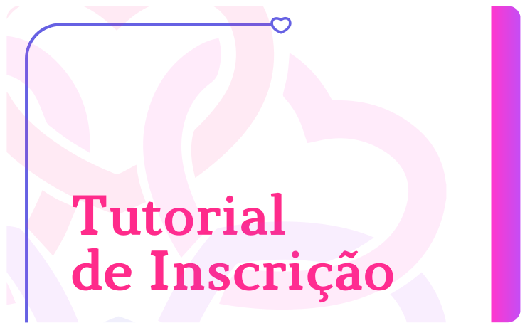

O curso Amparo — Aprendendo sobre a dependência química em mulheres acolhidas e reclusas: oportunidades de cuidado e atenção é promovido pela Secretaria Nacional de Políticas para Mulheres, do Ministério da Mulher, da Família e dos Direitos Humanos (SNPM/MMFDH) e desenvolvido pela Secretaria de Educação a Distância da Universidade Federal de Santa Catarina (SEAD-UFSC).
Este curso apresenta e discute como objeto central a dependência química em mulheres nos contextos de acolhimento social e encarceramento.
Aborda temas relacionados a: consumo de substâncias psicoativas e dependência química no Brasil e no mundo; diferenças entre sexo no uso, abuso e dependência de substâncias psicoativas; impacto e vulnerabilidade social e dependência química; tratamento e recuperação; e contexto do encarceramento feminino.
O objetivo do curso é viabilizar uma aprendizagem de qualidade e gratuita a diversos profissionais atuantes no contexto de Comunidades Terapêuticas e Instituições Carcerárias.
Nesta proposta metodológica, o cursista é o principal agente do seu processo de aprendizagem. Tem à sua disposição, no Ambiente Virtual de Ensino e Aprendizagem (AVEA), o material didático e as avaliações.
No que se refere à organização, o curso conta com uma trilha de aprendizagem composta por módulos de conteúdos que totalizam 28 horas de capacitação (08/03/22 a 26/04/22), conforme o programa apresentado a seguir:
O curso é totalmente ofertado a distância, por meio de um Ambiente Virtual de Ensino e Aprendizagem (AVEA), espaço em que se desenvolve todo o estudo. É responsabilidade do cursista acessar o Ambiente para estudar e realizar as avaliações obrigatórias.
As inscrições serão realizadas entre os dias 05/01/2022 e 28/02/2022, ou enquanto houver vagas disponíveis.
Serão priorizadas as inscrições de profissionais atuantes no contexto de Comunidades Terapêuticas e Instituições Carcerárias. Para ter prioridade, os profissionais devem anexar comprovante de vínculo ocupacional com os órgãos estaduais e/ou municipais.
Se houver disponibilidade de vagas, serão aceitas inscrições de público atuante na área.
Acesse o tutorial com o passo a passo para a realização da sua inscrição, clicando na figura abaixo:
Os cursistas que completarem todas as avaliações obrigatórias propostas, e que obtiverem o desempenho exigido para a sua conclusão, receberão ao final do curso um certificado de extensão universitária, emitido pela Universidade Federal de Santa Catarina (UFSC), com validade em todo o território nacional.
Esse certificado é eletrônico e possui uma assinatura digital com uma chave de validação que garante sua autenticidade e permite a impressão do documento pelo próprio cursista a partir do acesso à web.